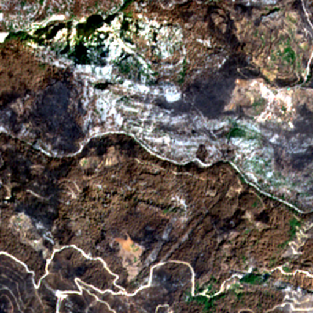
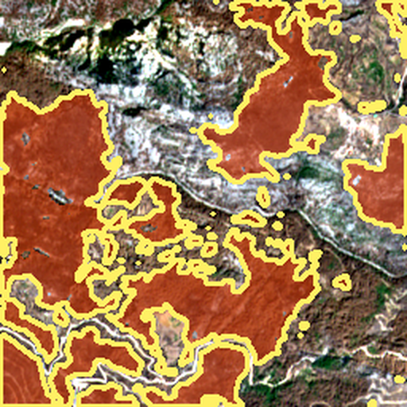
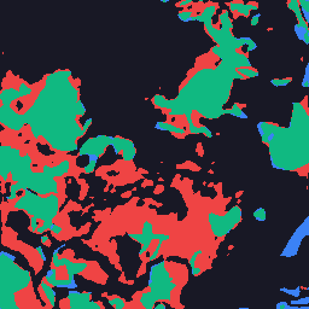

Engineered for high-precision autonomous wildfire perimeter delineation and burned area scar mapping. Combines 4-Band Transfer Learning with Focal-Tversky Loss Optimization to penetrate dense smoke hazes, resolve fine perimeter boundaries, and accelerate tactical disaster response and aerial retardant drops.
Resolving severe spatial class imbalance and smoke occlusion through multispectral weight transfer and gradient-focusing loss formulations.
Standard optical segmentation models fail when wildfires occupy less than 5% of a satellite tile. Ilādṛṣṭi couples a deep ResNet-50 encoder with a customized 5-stage expansive decoder to retain fine perimeter details.
Adapts ImageNet-pretrained weights to 4-channel input (Red, Green, Blue, NIR). The 4th NIR channel kernel is initialized via channel-wise mean averaging, preserving feature transfer without cold-start penalties.
High-resolution feature maps from ResNet stages ($C_1, C_2, C_3, C_4$) are routed directly into the decoder stages, restoring thin fire breaks and boundary perimeters lost during downsampling.
Each decoder stage applies bilinear upsampling followed by double $3\times 3$ convolutions, Batch Normalization, and ReLU activations, terminating in a $1\times 1$ logit projection head.
Standard Binary Cross-Entropy (BCE) treats every pixel equally, allowing overwhelming background pixels (95%) to suppress fire gradient updates. The Focal-Tversky Loss ($FTL$) penalizes False Negatives and concentrates learning on ambiguous boundary pixels.
Drag the interactive divider to compare raw Sentinel-2 satellite inputs directly with Ilādṛṣṭi's predicted wildfire perimeter masks.
Strict deterministic evaluation across an isolated held-out test split (Seed locked at 42). Comparing Mandatory Baseline (BCE) against Focal-Tversky across spectral configurations.
Honest accounting of physical optical ambiguities, false positive triggers under extreme atmospheric conditions, and proposed architectural mitigations.
High-albedo cloud tops reflect >85% of visible and NIR solar radiation. At cloud edges, sharp dropoffs create extreme spatial gradients that convolutional filters occasionally mistake for fresh fire perimeters.
Fringe false alarm rings bordering thick stratocumulus banks (demonstrated in Scene a1__07_13 with 13,269 FP pixels).
Steep north-facing alpine ravines receive minimal direct solar irradiance. Low reflectance values (<0.05 across RGB and NIR) deceptively mimic the flat, dark optical absorption profile of charcoal ash.
Localized false positive clusters in deep mountain gorges (demonstrated in Scene k__4_6 with 7,211 FP pixels).
Fast-moving savanna grass fires leave only ephemeral surface soot without deep canopy destruction. Wind rapidly scatters the light ash layer within 48 hours, causing spectral signatures to revert before satellite revisit.
Under-segmentation (False Negatives) for thin pasture fires compared to dense coniferous forest burns.
Direct inspection of actual test samples where optical limitations triggered false alarms:

1. Sentinel-2 RGB (Cloud Scene a1__07_13)
2. False Alarms along Cloud Margin (Red Overlay)
3. Spatial Confusion Map (Red = False Positive Commission)